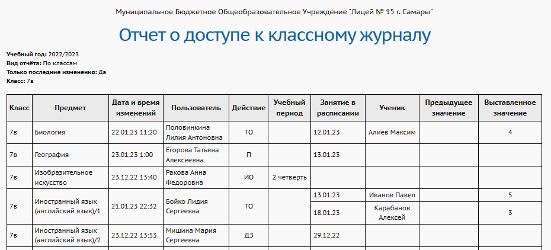
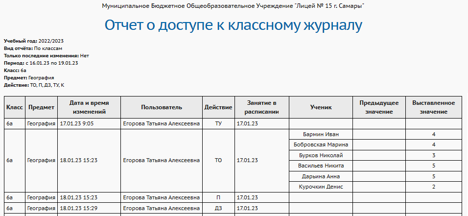

Этот отчёт выдает информацию о том, кто и когда редактировал классный журнал. Фиксируются все действия по выставлению и исправлению отметок:
| · | заполнение текущих оценок,
|
| · | заполнение посещаемости,
|
| · | заполнение итоговых оценок,
|
| · | заполнение домашнего задания (заполнение заданий других типов не фиксируется),
|
| · | заполнение темы урока,
|
| · | ввод комментария к оценке.
|
Этот отчёт доступен не только сотрудникам школы. Ученик может видеть, когда в последний раз выставлялись оценки в его классе. Родитель может видеть время последнего выставления оценок в тех классах, где учатся его дети.
Вид отчёта "По классам":
Здесь сотрудники школы могут выбрать класс. Поведение отчёта зависит от выбранного режима "Только последние изменения":
| · | при значении "Да": для каждого предмета и подгруппы выводится время только последнего изменения информации;
|
| · | при значении "Нет": выводится весь список изменений за указанный период времени.
|
В отличие от сотрудников школы, для учащихся и родителей доступен просмотр только последних изменений.
Вид отчёта "По учителям":
Этот вид отчёта доступен только сотрудникам школы.
Для выбранного сотрудника школы, таблица выводит все изменения за указанный период времени, автором которых был указанный сотрудник.
Пример 1: Если учитель на уроке замещал своего коллегу - основного преподавателя в данном классе, то в данном отчёте именно при выборе замещающего учителя будут выведены события редактирования журнала.
Пример 2: Если классный руководитель выставляет отметки по предметам за своих коллег-учителей, то в данном отчёте фиксируется именно классный руководитель.
Примечание. Редактировать классный журнал могут не только учителя, но и сотрудники с другими ролями (администратор системы, завуч и др.), в случае если администратор назначил им права доступа к редактированию классного журнала.
Как определить выставление текущих отметок "задним числом"?
Сотрудник школы может видеть в таблице отчёта поле "Занятие в расписании": сравнив его с полем "Дата и время изменений", легко можно определить факты выставления текущих отметок "задним числом".
В системе можно установить Ограничение на редактирование текущих оценок и посещаемости задним числом.
Как увидеть факты изменения оценок по отдельным учащимся?
1. Выберите режим "Только последние изменения"="Нет", после чего в отчёте доступен фильтр "Действие" с перечислением действий, которые отслеживаются в системе.
2. В фильтре "Действие" должен быть отмечен вариант "ТО" (текущие оценки), он может быть отмечен вместе с другими вариантами.
3. Нажмите кнопку Сформировать. В таблице отчёта выводятся столбцы: "Ученик", "Предыдущее значение", "Выставленное значение" - в которых выводится оценка до исправления и после исправления.
Другие отчёты о заполнении электронного журнала
| · | "Отчёт по ведению электронных журналов" - отражает сводную информацию по школе;
|
| · | "Сводный отчёт по заполняемости электронных журналов" - детализирует информацию по классам, предметам, учителям;
|
| · | "Отчёт об успеваемости ученика" - показывает информацию только по одному ученику;
|
| · | "Отчёт об успеваемости и посещаемости ученика" - показывает оценки и пропуски одного ученика сразу по всем предметам.
|
Если в вашей школе электронные журналы заполняются оперативно, то также будет полезен отчёт "Своевременность выставления текущих отметок".
Примеры отчёта:

